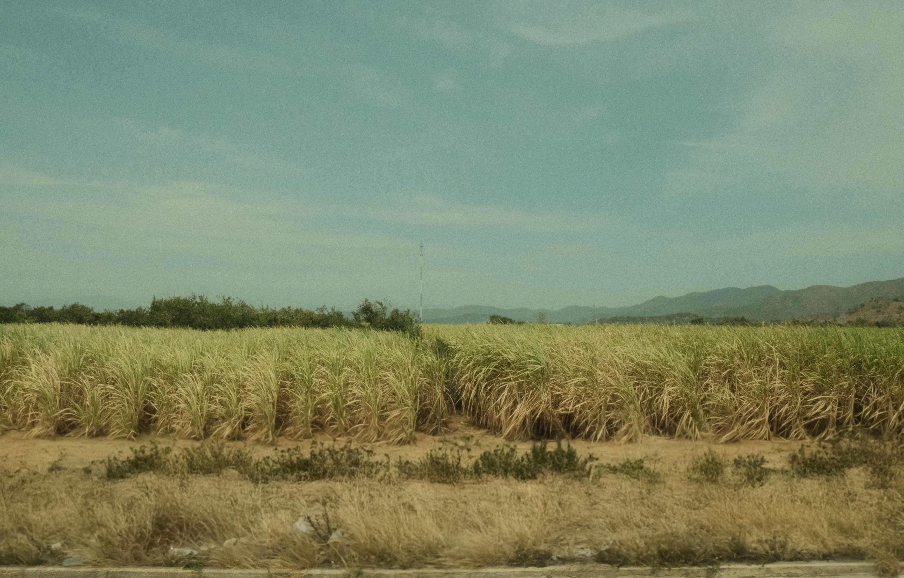

A healthy sugarcane crop is characterized by vigorous growth, dark green leaves, thick and strong stalks, and a well-developed root system. It requires fertile, well-drained soil, adequate sunlight, regular irrigation, and balanced nutrient management for optimum growth. Timely application of fertilizers, effective weed control, and protection from pests and diseases help maintain crop health and improve yield. Healthy sugarcane plants produce more tillers, have higher sugar content, and are less susceptible to environmental stress. Proper farming practices such as crop rotation, soil testing, and the use of disease-free seed canes further enhance crop productivity. Maintaining a healthy sugarcane crop not only increases the quantity and quality of the harvest but also improves farmers' income and supports sustainable agricultural production.